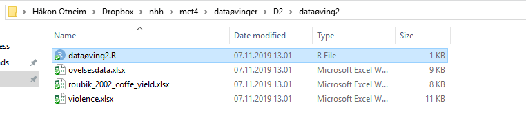
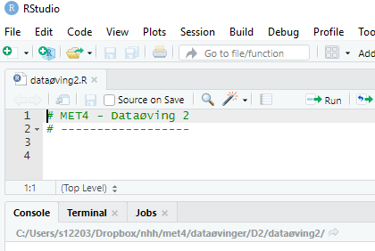

7.2 Dataøving 2
7.2.1 Interaktiv øvelse
Før vi tar fatt på dataanalysen begynner vi med litt R-trening i swirl. Har du allerede installert pakken swirl (skriv install.packages("swirl") i konsoll hvis ikke) starter du opp swirl med å skrive følgende i konsollen:
library(swirl)
swirl()Du vil i starten bli bedt om å skrive inn ditt navn. Hvis du bruker samme navn som tidligere får du kanskje tilbud om å starte opp igjen der du slapp, men da kan du bare velge det nederste valget ‘No. Let me start something new’. Du velger så alternativet ‘R Programming’ hvor du får se alle modulene dette kurset inneholder. I denne øvingen skal du prøve deg på modul 6 ‘Subsetting Vectors’ og modul 8 ‘Logic’.
Husk at det helt til høyre vil står hvor langt du har kommet i prosent. Står du helt fast med et punkt kan du skrive skip() for å hoppe over dette punktet. Når du har fullført en modul blir du spurt om du vil motta ‘credit’ for å ha fullført modulen. Her kan du svare nei. Ønsker du å avbryte underveis skriver du bye(). Skriver du inn det samme navnet når du eventuelt starter swirl igjen kan du fortsette der du slapp. Husk å avslutt swirl () før du begynner på neste del av datalabben. Lykke til!
7.2.2 Data til dataøvelsen
I denne dataøvelsen skal vi ved hjelp av R gjennomføre en del av testene som vi har lært i praksis. Vi skal gjøre både ett- og to-utvalgs tester, og vi skal bruke \(\chi^2\)-testen
Vi skal jobbe med tre ulike datasett i denne øvingen, og alle sammen kan lastes ned ved å klikke på lenkene under:
Last ned disse filene og legg dem i en mappe på datamaskinen din. Åpne så RStudio, velg File -> New File -> R Script for å åpne et nytt Rscript, og lag gjerne en liten overskrift ved hjelp av kommentartegnet #. Lagre så scriptet ditt i samme mappen som du har lagt datasettene, slik at du nå har en mappe som ser ut som figuren under:

Det neste du må gjøre er å sørge for at du har satt opp riktig mappesti (working directory) i RStudio, og det gjør du raskest ved å velge Session -> Set Working Directory -> To Source File Location. Neste gang du skal jobbe med dette prosjektet kan du åpne RStudio ved å dobbeltklikke på dataøving2.R, og mappestien skal da settes automatisk til riktig mappe. I alle tilfeller skal vinduet ditt se omtrent slik ut:

7.2.3 Oppgaver til øvingen:
7.2.3.1 Oppgave 1
Costa Rica er en stor kaffeprodusent med moderne produksjon. Kaffeprodusentene har over lengre tid benyttet en standardisert miks av sprøytemidler som skal ta knekken på ugress og skadelige insekter, men uten å skade avlingen eller miljøet ellers.
En liten kaffeplantasje i Costa Rica har begynt å eksperimentere med en ny kombinasjon av sprøytemidler som skal være like effektiv mot ugress, men samtidig enda mer skånsom mot kaffeplantene, slik at avlingen blir større. Innehaveren av plantasjen ønsker å sette opp et eksperiment for å undersøke denne påstanden. Han velger ut 25 tilfeldige jordlapper fordelt på hele eiendommen der han bruker de nye sprøytemidlene gjennom en hel sesong.
Lang erfaring har vist at avlingen ved bruk av gammel metode er normalfordelt med forventning \(\mu = 100\) og standardavvik \(\sigma = 10\), der vi har brukt en standardisert enhet for mengde avling per arealenhet. Hjelp bonden, ved å løse følgende oppgaver:
Oppgave 1.1: Les inn datasettet testdatasdata.xsl i RStudio og se på de første par radene. Det kan du gjøre ved å kjøre følgende kodelinjer:
library(readxl) # Pakke for å lese excel-filer
data <- read_excel("testdata.xls") # Leser inn datasettet
data # Ser på datasettet## # A tibble: 25 x 4
## X1 X2 A1 A2
## <dbl> <dbl> <dbl> <dbl>
## 1 122. 121. 1 1
## 2 101. 105 1 1
## 3 114. 108 1 1
## 4 103 99.1 1 0
## 5 97.6 96.2 0 0
## 6 85.9 95.4 0 0
## 7 93.5 101. 0 1
## 8 92 97 0 0
## 9 98.8 106. 0 1
## 10 99.9 100. 0 1
## # ... with 15 more rowsDet er kolonnen X2 som inneholder de observerte avlingene på de 25 forsøksseksjonene.
Oppgave 1.2: Er forventet avling ved bruk av den nye metoden større enn forventet avling ved bruk av den gamle metoden? Hint: Forelesningsnotatene/scriptet inneholder koden du trenger for å løse denne og neste oppgave.
Oppgave 1.3: Det er viktig for kaffebonden at avlingen ikke varierer for mye mellom de ulike delene av farmen. En viktig måleparameter for denne type produksjon er derfor variansen. Kan vi slå fast at variansen til avlingen har forandret seg etter omlegging til ny metode?
Oppgave 1.4: Kaffebonden er skeptisk til påstanden om at forventet avling med den gamle metoden er \(\mu = 100\), og mener at det vil variere med for eksempel jordsmonn. For å ta høyde for dette gjennomførte han året i forveien tilsvarende målinger på de samme jordlappene, med med gammel sprøytemetode. Disse målingene finner du i kolonne X1 i datasettet. Test om avlingene er forskjellige, både med og uten paring av observasjonene. Kommenter resultatet.
7.2.3.2 Oppgave 2
Vi skal i denne oppgaven se på oppgave 1a og 1b som ble gitt på skoleeksamen i MET4 vårsemesteret 2019. Dette er det samme datasettet som vi så på i forrige dataøving. I et amerikansk forsøk ville man undersøke påstanden om at voldelige dataspill fører til voldelig adferd ved la to grupper spille hvert sitt dataspill. I det “voldelige” dataspillet var oppdraget å skyte og drepe et romvesen, mens i den ikke-voldelige varianten skulle man finne og redde romvesenet fra fare. Utover det var spillene helt likt utformet, og i etterkant av en spilleøkt ble deltakernes aggresjonsnivå målt på en skala fra 1 til 9 ved hjelp av en standard psykologisk test.
I denne oppgaven skal vi i hovedsak finne ut om gruppen som spilte de voldelige dataspillet hadde signifikant høyere aggresjonsnivå enn kontrollgruppen.
Oppgave 2.1: Les inn datasettet violence.xslx på samme måte som over. Hvis du allerede har kjørt library(readxl) trenger du ikke gjøre det igjen med mindre du har startet RStudio på nytt. Gi datasettet et passende navn, f.eks
violence <- read_excel("violence.xlsx")Vi skal altså teste om aggresjonsnivået er forskjellig i de to gruppene. Da må vi trekke ut de aktuelle tallene fra datasettet. Som vi husker fra forelesningsnotatene trenger vi to vektorer for å gjøre en to-utvags \(t\)-test: en vektor som inneholder aggresjonsnivået til gruppen som har spilt det voldelige dataspillet, og en vektor som inneholder aggresjonsnivået til gruppen som har spilt det ikke-voldelige dataspillet.
La disse to vektorene få navn voldelig og ikke_voldelig, og lag dem ved å skrive følgende kodelinjer:
voldelig <- violence$aggression_level[violence$violent_treatment == "Violent"]
ikke_voldelig <- violence$aggression_level[violence$violent_treatment == "Less Violent"]For en forklaring på disse kodelinjene, se Dataøving 1.
Oppgave 2.2: Vi er nå klare til å gjøre en to-utvalgs \(t\)-test for om aggresjonsnivået er det samme i de to gruppene. Prøv å gjøre det nå, men vær bevisst på hvilke valg du gjør underveis, og som du mater inn i t.test()-funksjonen, f.eks:
- Antar du lik varians i de to gruppene? Hvorfor/Hvorfor ikke?
- Bruker du ensidig eller tosidig test? Hvorfor?
Oppgave 2.3: En avgjørende detalj i studien som vi ser på i denne oppgaven er at forskerne også spurte forsøkspersonene hvorvidt de selv syntes spillet de spilte var voldelig. For å kunne trekke noen som helst lærdom fra et slikt forsøk er det viktig at den voldelige spillvarianten faktisk blir oppfattet som voldelig og vice versa. Vi ønsker dermed å undersøke nullhypotesen om at variablene violence_tratment og experienced_violence er uavhengige av hverandre. Den hypotesen er vi nødt til å forkaste for at forsøket skal være gyldig: hvis det ikke er noen sammenheng mellom opplevd og faktisk voldelighet er forsøket helt klart ugyldig.
Første steg er å lage et nytt datasett der vi bare ta med oss de to kolonnene vi er interessert i. Kall det hva du vil, f.eks. violence_redusert:
violence_redusert <- violence[c("violent_treatment", "experienced_violence")]Vi fortsetter som i videoforelesningen og lager en krysstabell for disse variablene
krysstabell <- table(violence_redusert)
krysstabell## experienced_violence
## violent_treatment Less Violent Violent
## Less Violent 114 9
## Violent 33 93Oppgave 2.4: Heldigvis ser det ut til at det er en klar sammenheng mellom faktisk og opplevd voldelighet ved at de fleste forsøkspersonene havner på diagonalen i krysstabellen. Bruk funksjonen chisq.test() på samme måte som i forelesningen til å teste nullhypotesen om uavhengighet formelt.
7.2.3.3 Oppgave 3
Vi skal i denne oppgaven returnere til kaffeproduksjon. Vi skal gjøre statistiske tester i R som i de tidligere oppgavene i denne øvingen, men vanskelighetsgraden går opp fordi vi også må tenke nøye over hvordan vi anvender metodene korrekt i en gitt kontekst.
I 2002 publiserte det prestisjetunge tidsskriftet Nature en kort artikkel skrevet av David W. Roubik1, som handler om den kjente kaffebønnen Arabica. Arabicabønnen kommer opprinnelig fra Afrika, og er en selvpollinerende plante. Det vil si at den ikke er avhengig av insekter for å formere seg, og man trodde lenge at den heller ikke hadde noen fordeler av insektspollinering.
For å undersøke denne påstanden samlet Roubik inn historiske data over arabicaavlinger fra hele verden. Han delte verdens kaffeproduserende land inn i to kategorier: Old world som omfatter afrikanske og asiatiske land, og New world som omfatter land i Latin-Amerika. Han registrerte videre gjennomsnittlig årlig avling (målt i kg/hektar) i to perioder: 1961–80 og 1981–2001.
Nøkkelen til analysen er at den afrikanske honningbien var en viktig pollinator i Afrika og Asia både i den første og andre perioden, men knapt eksisterte i Amerika før 1980. Etter 1980, derimot, økte utbredelsen av denne bien i Amerika, og ble fort naturalisert. Kan vi sette denne utviklingen i sammenheng med økt kaffeavling i Latin-Amerika etter 1980, og dermed skrote teorien om at kaffeplanter ikke drar nytte av insektspollinering?
Oppgave 3.1: For å undersøke dette kan vi bruke datasettet som Roubik brukte, som finnes i filen roubik_2002_coffe_yield.xlsx. Last datasettet inn i R på vanlig måte, og se på det:
yield <- read_excel("roubik_2002_coffe_yield.xlsx")
yield## # A tibble: 28 x 4
## world country yield_61_to_80 yield_81_to_01
## <chr> <chr> <dbl> <dbl>
## 1 new Costa_Rica 9139 14620
## 2 new Bolivia 7686 8767
## 3 new El_Salvador 9996 8729
## 4 new Guatemala 5488 8231
## 5 new Colombia 5920 7740
## 6 new Honduras 4096 7264
## 7 new Nicaragua 4566 6408
## 8 new Brazil 4965 6283
## 9 new Peru 5487 5740
## 10 new Mexico 5227 5116
## # ... with 18 more rowsVi ser at det er fire kolonner i datasettet:
worldangir om det er snakk om New world (new) eller Old world (old).countryangir navnet på landet.yield_61_to_80angir avlingen i perioden 1961–80.yield_81_to_01angir avlingen i perioden 1981–2001.
Oppgave 3.2: Kall den første tidsperioden p1 og den andre tidsperioden p2. Lag så fire vektorer, en for hver kombinasjon av world og tidsperiode ved å bruke samme teknikk som i oppgave 2.2 over. Når du er ferdig, skal du ha laget følgende vektorer:
new_p1: inneholder avling for alle land medworld == newi første periode.new_p2: inneholder avling for alle land medworld == newi andre periode.old_p1: inneholder avling for alle land medworld == oldi første periode.old_p2: inneholder avling for alle land medworld == oldi andre periode.
Dersom du har gjort det riktig, ser vektorene slik ut når du er ferdig:
new_p1## [1] 9139 7686 9996 5488 5920 4096 4566 4965 5487 5227 2347 3089 1938new_p2## [1] 14620 8767 8729 8231 7740 7264 6408 6283 5740 5116 4124 3240
## [13] 2789old_p1## [1] 4251 10522 3509 10028 5667 17064 5904 4001 6604 4738 5716 3824
## [13] 3525 3393 3213old_p2## [1] 13380 11561 9652 9593 8797 7869 7354 7288 6055 5432 5394 3576
## [13] 3141 2391 2136Oppgave 3.3: Bruk en paret \(t\)-test til å finne ut om kaffeavlingen i den gamle verden er signifikant forskjellig i de to tidsperiodene.
Oppgave 3.4: Bruk en paret \(t\)-test til å finne ut om kaffeavlingen i den nye verden er signifikant forskjellig i de to tidsperiodene.
Oppgave 3.5 (Diskusjonsopgave): Dersom du har gjort de to foregående oppgavene riktig vil du se at den gjennomsnittlige kaffeavlingen ikke har endret seg signifikant i den gamle verden, mens økningen i den nye verden er klart statistisk signifikant. Vi har brukt parrede \(t\)-tester, slik at vi “kontrollerer for” eventuelle landeffekter (denne terminologien blir skal vi bruke mer når vi skal jobbe med regresjon).
Roubik omtaler funnet som følger:
A substantial increase in Latin American coffee yield partly coincided with the establishment of African honeybees in those countries, although there was no such change in the Old World, where honeybees originated […]. This comparison underlines a possible cause-and-effect relationship between the presence of social bees and cofee yield.
Dette er intet mindre enn en kortslutning, på minst to forskjellige måter. Hvorfor? Diskuter med dine medstudenter. Kan det gjennomføres en enkel test som gir et bedre bilde av situasjonen?
7.2.4 BONUS: En alternativ teknikk for datamanipulering (Gjør bare om du har overskudd til det!)
Se på denne kodelinjen:
voldelig <- violence$aggression_level[violence$violent_treatment == "Violent"]Vi skrev denne linjen for å hente ut noen bestemte verdier fra et bestemt datasett. Det er kanskje ikke så lett å se hva kodelinjen gjør ved å bare kaste et raskt blikk på den, og det er spesielt to grunner til det:
- den er lang, og
- du må lese den delvis “innenfra og ut” (alstå, begynne innerst i parantesene) og delvis fra høyre mot venstre.
Spesielt det siste punktet er kontraintuitivt, siden det er motsatt av slik vi vanligvis leser. Mye arbeid i R går ut på å manipulere datasett på ulike vis (hente ut kolonner og rader, lage nye kolonner), og derfor er det utviklet noen alternative verktøy for å gjøre slike jobber mye mer effektivt. Vi vil i dette avsnittet gi en kort og meget grunleggende innføring i slike teknikker. Merk at dette ikke er pensum i klassisk forstand. Det viktigste er at jobben blir gjort korrekt. Hvordan du gjør det er i så måte underordnet.
For å gjennomføre øvelsen under må du installere og laste inn en ny pakke: dplyr:
install.packages("dplyr")
library(dplyr)KONSEPT 1: Pipe-operatoren %>%
Tenk deg at vi skal regne ut logaritmen til kvadratroten av 2. Vi må da anvende to funksjoner i riktig rekkefølge. Vi kan alltids bruke en mellomregning:
kvadratroten_til_2 <- sqrt(2)
log(kvadratroten_til_2)## [1] 0.3465736Eventuelt kjører vi alt sammen i en linje:
log(sqrt(2))## [1] 0.3465736Nå er ikke den siste linjen spesielt lang, men den er som sagt ikke helt intuitiv. Grunnen er at hvis vi skal lese høyt hva den gjør, så må vi begynne innerst i parantesene: “Vi starter med tallet 2, så tar vi kvadratroten, så tar vi logaritmen…”
I dplyr-pakken finnes en såkalt pipe-operator som gjør at vi kan skrive dette som kode i den rekkefølgen ting skal skje. Eksempelet over skrives slik:
2 %>% sqrt %>% log## [1] 0.3465736Det som skjer er at R leser linjen fra venstre, og ved hver “pipe/%>%” sendes det som står på venstre side inn som argument i funksjonen på høyre side. Når du leser kode, kan denne operatoren uttales som så (then på engelsk): Først har vi tallet 2, så tar vi kvadratroten, så tar vi logaritmen.
Tenk når vi har en sekvens av 10 eller 20 eller 50 steg (ikke uvanlig i den virkelige verden), hvor mye enklere det blir å kode på denne måten fremfor å ha 10, 20 eller 50 nivå med paranteser!
Tips: Hurtigtasten for %>% i RStudio er Ctrl - Shift - M (Bytt ut Ctrl med Cmd på Mac).
KONSEPT 2: Datamanipuleringsfunksjoner i dplyr
I dplyr finnes det noen meget praktiske funksjoner som vi kan bruke til å manipulere datasatt i R. La oss ta utgangspunkt i datasettet violence og prøve å skrive om den aktuell kodelinjen over ved hjelp av pipe-operatoren. I klartekst skal vi gjøre følgende operasjoner:
- Starte med datasettet
violence - Plukke ut alle radene som har verdi
"Violent"i kolonnenviolent_treatment. - Plukke ut kolonnen
aggression_level
For å velge ut bestemte rader kan vi bruke funksjonen filter(). Ved hjelp av pipe-operatoren kan vi skrive steg 1 og 2 som
violence %>% filter(violent_treatment == "Violent")## # A tibble: 126 x 5
## id aggression_level violent_treatment difficulty_treatm~ experienced_viol~
## <dbl> <dbl> <chr> <chr> <chr>
## 1 1 4 Violent Easy Less Violent
## 2 2 5 Violent Hard Violent
## 3 5 2 Violent Easy Violent
## 4 6 9 Violent Hard Less Violent
## 5 10 4 Violent Hard Violent
## 6 18 4 Violent Hard Violent
## 7 21 4 Violent Easy Violent
## 8 22 9 Violent Hard Less Violent
## 9 25 7 Violent Easy Violent
## 10 26 1 Violent Hard Less Violent
## # ... with 116 more rowsNå ser vi at vi bare har 126 rader igjen, og det er nettopp de radene som i kolonnen violent_treatment har verdi "Violent". Det neste steget er å velge ut kolonnen aggression_level. Det gjør vi ved å bruke funksjonen select(), og hele sekvensen ser da slik ut (linjeskift gjør det enda mer lesbart):
violence %>%
filter(violent_treatment == "Violent") %>%
select(aggression_level)## # A tibble: 126 x 1
## aggression_level
## <dbl>
## 1 4
## 2 5
## 3 2
## 4 9
## 5 4
## 6 4
## 7 4
## 8 9
## 9 7
## 10 1
## # ... with 116 more rowsMan kan velge flere kolonner ved å sette komma mellom kolonnenavn, og man kan i stedet velge bort kolonner ved å sette minustegn foran kolonnenavnet, f.eks:
violence %>% select(id, aggression_level)
violence %>% select(-id)Nå har det seg slik at vi gjerne ønsker å hente ut den aktuelle kolonnen som en vektor. Det gjør vi enkelt ved å slenge på en pull på slutten av en pipe-sekvens. Til slutt må vi passe på å lagre vektoren med riktig navn, slik at vi får:
voldelig <- violence %>%
filter(violent_treatment == "Violent") %>%
select(aggression_level) %>%
pullDenne koden er ekvivalent med den som startet dette avsnittet i øvingen. Den er derimot mye enklere å lese, og veldig mye enklere å utvide til å inkludere flere operasjoner.
La oss se på enda en funksjon som vil være svært nyttig for oss senere. Vi kan bruke mutate() til å lage nye kolonner. La oss for eksempel si at vi vil lagre kvadratet av aggression_level eller summen av aggression_level og id som egne kolonner (som selvsagt er helt meningsløst i dette tilfellet, kun et eksempel). Det kan vi gjøre slik:
violence %>%
mutate(ny1 = aggression_level^2) eller
violence %>%
mutate(ny2 = id + aggression_level)Her er ny1 og ny2 navn på de nye kolonnene, som vi kan velge selv.
Oppgave: Gjenta Oppgave 3.2, men ved å bruke teknikkene i dette avsnittet.
Interaktiv øving i dplyr
Hvis du ønsker å trene mer på dette så finnes det en interaktiv modul i swirl som omhandler datamanipulasjon ved hjelp av dplyr. Hvis du ikke har gjort det alledede, skriv install.packages("swirl") i konsoll. Start du opp swirl med å skrive følgende:
library(swirl)
install_course("Getting_and_Cleaning_Data ") # legger til nytt kursmateriale
swirl()Du vil i starten bli bedt om å skrive inn ditt navn og så følger litt info om hvordan swirl fungerer. Du blir så bedt om å velge kurs. Her skal du først velge alternativet ‘Getting and Cleaning Data’. Du får så se alle modulene dette kurset inneholder. I denne øvingen skal du prøve deg på modul 1 ‘Manipulating Data with dplyr’.
David W. Roubik: The value of bees to the coffee harvest. Nature (2002)↩︎